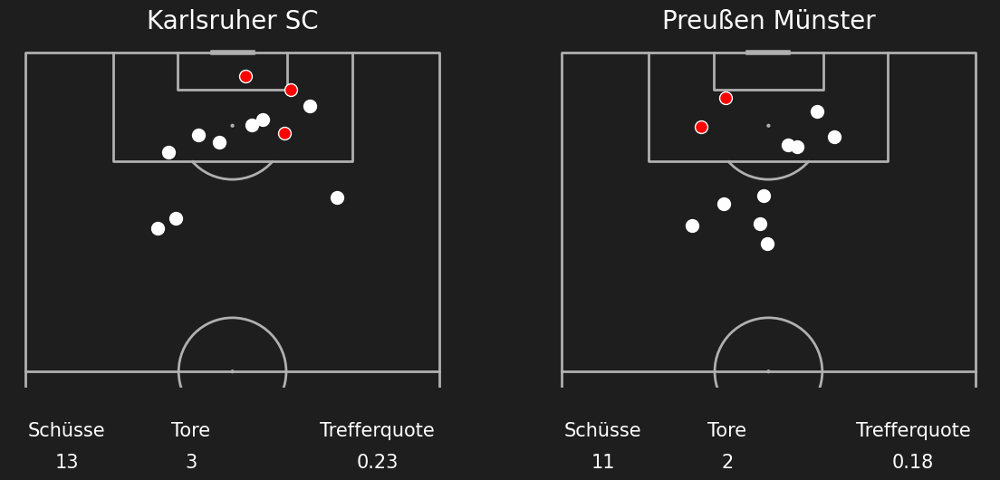
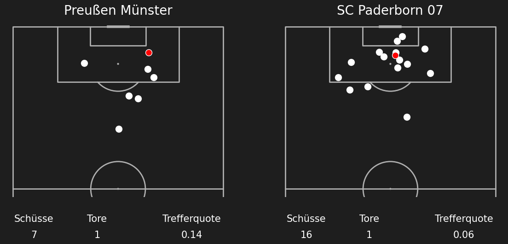
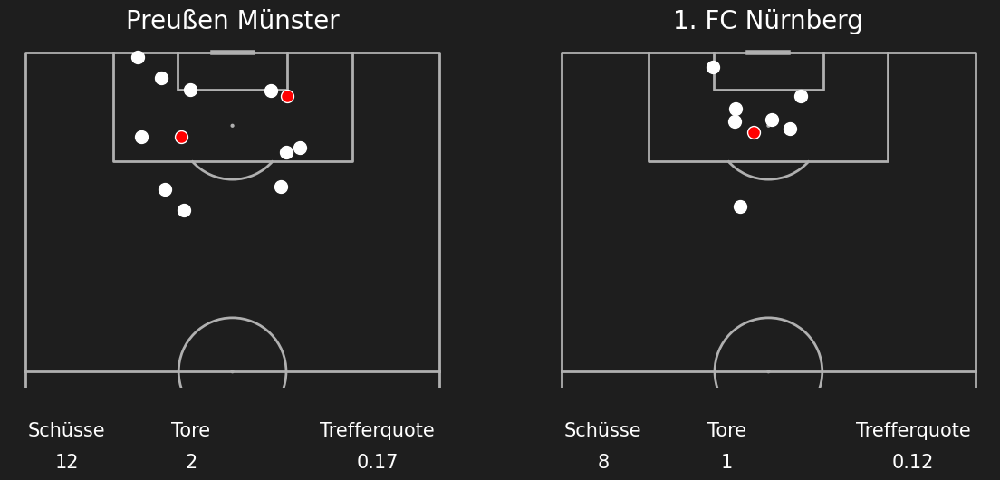
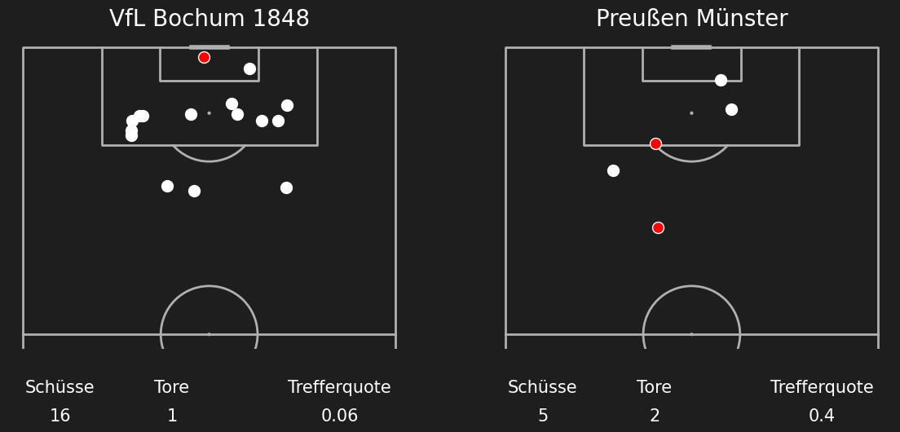
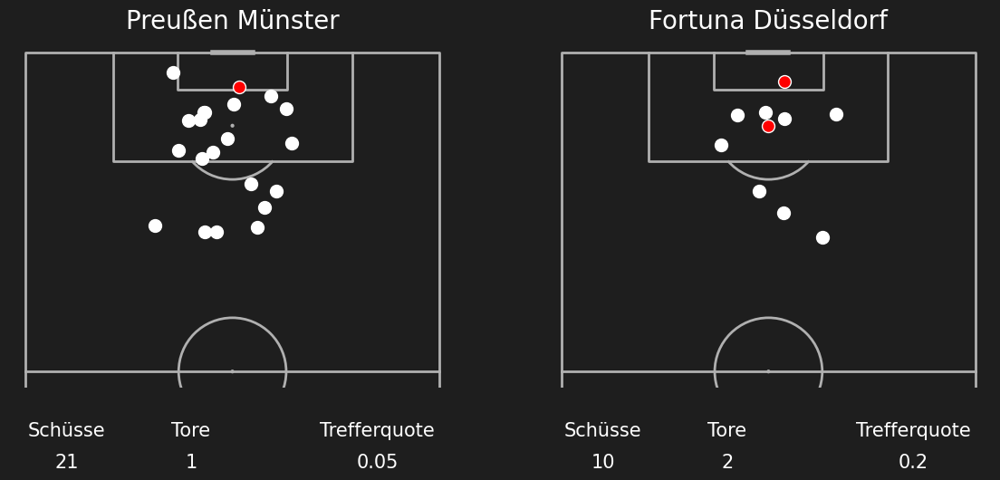
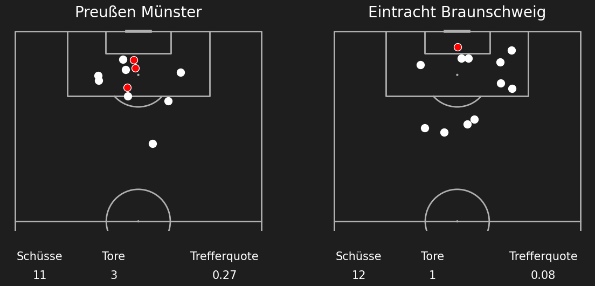

Shotmaps Preußen Münster Saison 24/25
Runde 1 Karlsruher SC (3) - (2) Preußen Münster

Runde 2 Preußen Münster (1) - (1) SC Paderborn 07

Runde 3 Preußen Münster (2) - (1) 1 FC Nürnberg

Runde 4 VfL Bochum 1848 (1) - (2) Preußen Münster

Runde 5 Preußen Münster (1) - (2) Fortuna Düsseldorf

Runde 6 1 FC Kaiserslautern (4) - (1) Preußen Münster
_-_(1)_Preußen_Münster.png)
Runde 7 Preußen Münster (3) - (1) Eintracht Braunschweig

Runde 8 Hertha BSC (2) - (1) Preußen Münster
_-_(1)_Preußen_Münster.png)